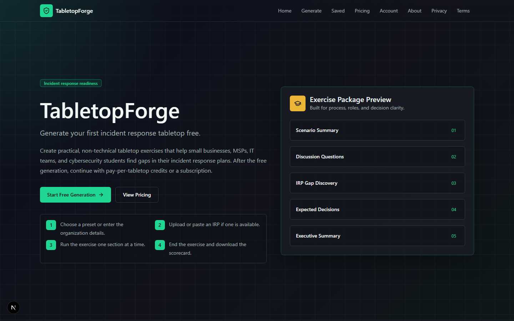
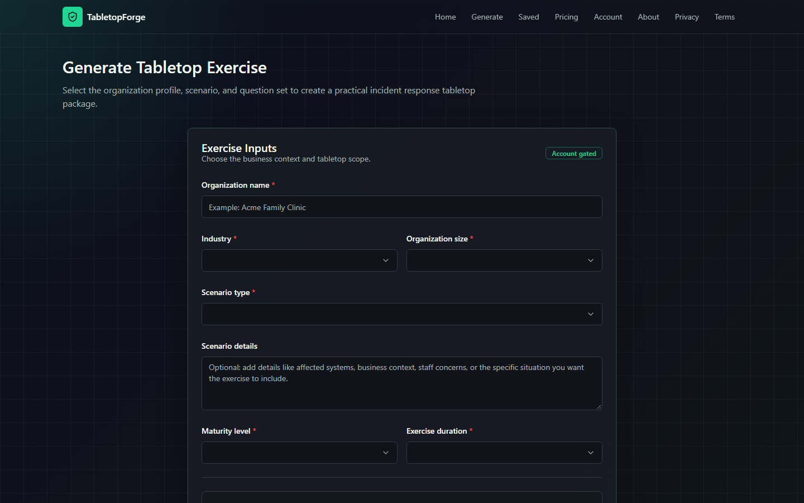

01 / Brief
Make the first exercise easier to run.
Observed need
Many smaller organizations know they need to test incident response plans, but realistic tabletop exercises can feel too complex, too expensive, or too technical to start.
02 / Exercise system
One scenario enters. A working exercise packet leaves.


Scenario library
- Phishing
- BEC
- Ransomware
- Insider threat
- Cloud misconfiguration
- Vendor breach
- Compromised admin
TF
Exercise builder
guided configuration
- 01 Summary + objectives
- 02 Participants + questions
- 03 IRP gap prompts
- 04 Facilitator notes
- 05 Executive summary
- 06 Lessons-learned template
03 / Delivery record
Built now, planned next.
The boundary matters: the first column describes delivered behavior; the second records future direction already stated in the portfolio.
Delivered
- Browser-based saved exercises
- Copyable and downloadable Markdown
- Generated summaries, prompts, notes, and templates
- shadcn-style UI
Planned
- Stronger reporting
- Future PDF export
04 / Security value
Turn discussion gaps into visible work.
EscalationWho needs to know?
AuthorityWho can decide?
CommunicationWhat is already prepared?
Follow-throughHow is remediation tracked?
The generator guides a team toward missing escalation paths, unclear decision authority, weak communication templates, and gaps in lessons-learned tracking.
05 / Reflection
A useful security product also has to help people make decisions under pressure, document those decisions, and convert findings into remediation work.
This project pushed the work beyond alerts and tools and toward the people who have to use an incident response plan.